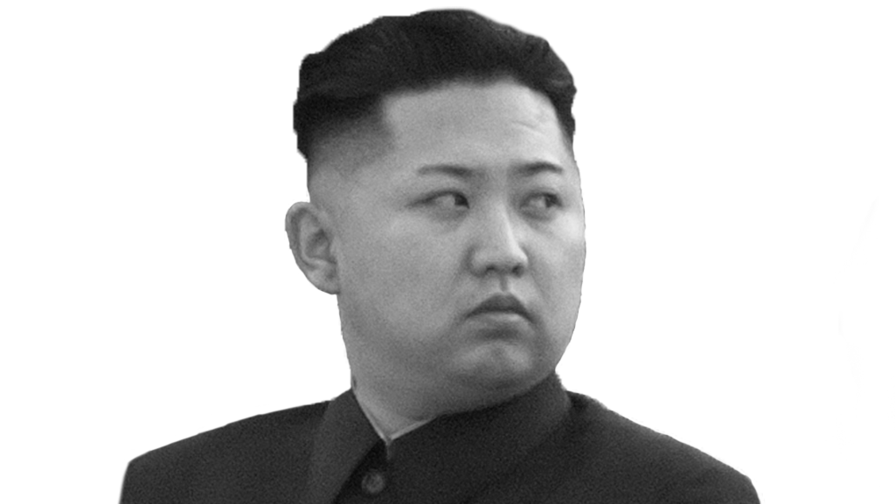
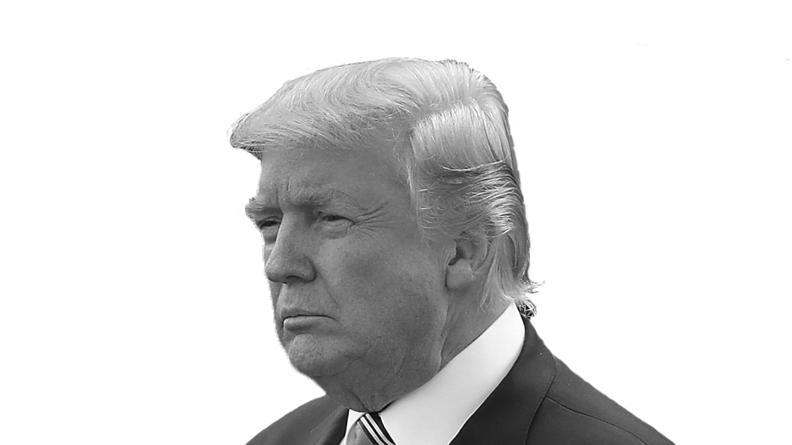

A Visual History of US-North Korea relations
1. Since 1990, according to open source information, there have been approximately 202 occasions when the U.S. and North Korea met for bilateral and multilateral negotiations on nuclear-related issues.
2. The highest frequency of negotiations occurred during a ten-year period from 1992 to 2002. This corresponded with the lowest number of North Korean missile tests and overall provocations carried out during that time. The missile moratorium observed by North Korea from 1999 to 2003 could partially explain the absence of missile tests.
3. There has been a significant decline in U.S.-DPRK negotiations and a rapid increase in the number and intensity of North Korean provocations since 2012. This could indicate that North Korea has undergone a major strategic shift under the leadership of Kim Jong-un.
4. The total number of publicly disclosed negotiations conducted under Kim Jong-un has experienced a significant drop-off as compared with Kim Jong-il and Kim Il-sung. Conversely, there has been an exponential increase in the number of provocation events carried out under Kim Jong-un since 2012.
Negotiations over North Korea's nuclear program have occurred for nearly 30 years. The debate over the efficacy of dialogue and engagement with North Korea has been raging even longer. Here we analyze the history of talks between the U.S. and North Korea to see if there are trends that could help shed light on the present nuclear conundrum.
Numerous studies have assessed various diplomatic efforts, including the 1994 Geneva Agreed Framework and the Six Party Talks, to explain the international community's failure to stop the DPRK's nuclear program and the complexities of negotiating with North Korea. However, there are few open source studies that have explored the entire record of nuclear diplomacy between North Korea and the United States and have tested the relationship between negotiations and other material variables to explain historical outcomes.
About the Interactive
This calendar interactive displays Provacations by North Korea and Negotations between the United States and North Korea. Each month in an year has two boxes, one for negotiations and one for provocations.
Negotiations between North Korea and the United States are shown as boxes in shades of blue. A darker shade of blue represents more Negotiations
Provocations by North Korea are shown as boxes in shades of red. A darker shade of red represents more Provocations.
Key events will be annotated for you
First North Korean Nuclear Crisis & 1994 Geneva Agreed Framework

The beginning of North Korea's ballistic missiles and nuclear weapons program can be traced as far back as the 1960's. However, the collapse of the Soviet Union in 1991 had significant consequences for North Korea. The loss of support from its largest Cold War benefactor caused the regime to push for greater military self-reliance including through development of strategic nuclear weapons. Although North Korea only succeeded in testing a couple short-to-medium range ballistic missiles during this time the groundwork was laid for the first nuclear crisis. Given its limited nuclear capabilities at this time, North Korea continued to rely on conventional forces for deterrence purposes and to maintain leverage against South Korea and the U.S. There appears to be little to no relationship between negotiations and provocations at this time.

The discovery of a plutonium processing facility at Yongbyon in North Korea, fears about production of fissile material for nuclear weapons, and North Korea's rejection of an International Atomic Energy Agency (IAEA) safeguards agreement prompted the start of the 1st nuclear crisis. North Korean motives for developing a nuclear program were likely affected by the normalization of diplomatic relations between South Korea and the Soviet Union in 1990 and South Korea and China in 1992. The U.S. approach to the First Gulf War and Saddam Hussein was also probably a factor in their calculations.
While tensions were high over the nuclear program developments, North Korea also tested several short-to-medium range missiles during this period of time. However, it was ultimately the return to negotiations in June 1994 (after a visit by former President Jimmy Carter to North Korea) that ultimately brought the immediate crisis to an end. In the 1994 Agreed Framework that followed, North Korea agreed to freeze and eventually dismantle its nuclear reactors and allow IAEA inspectors to monitor the implementation process. In exchange, the U.S. agreed to provide two light-water reactor power plants and to provide security assurances while working towards normalization of bilateral relations.
While engagement in U.S.-DPRK bilateral nuclear negotiations did not prevent North Korea from carrying out overt military provocations, there were relatively less provocations than in subsequent periods.
In the nearly 30-year history of diplomatic negotiations between the U.S. and North Korea, the greatest number talks between the two countries occurred during this time. Both Washington and Pyongyang attempted to implement the provisions of the 1994 Agreed Framework through bilateral negotiations and working-level talks in the Korean Peninsula Energy Development Organization (KEDO).
This period of engagement was occasionally punctuated by various North Korean provocations including North Korean ground troop infiltrations into South Korea in 1996 and the launch of a Taepo-dong missile in August 1998. However, on the whole the number of negotiations outweighed the number of provocations.
Suspicions about North Korea's clandestine pursuit of an enriched uranium nuclear weapons program (in addition to the existing plutonium program) eventually surfaced at the end of the Clinton administration's second term but were not verified until October 2002. Despite some progress, deep mutual distrust (and complicated domestic political dynamics) prevented both sides from implementing the Agreed Framework in an adequate and timely manner.
Second North Korean Nuclear Crisis & Six Party Talks
In October 2002, during a visit to Pyongyang by Assistant Secretary of State for East Asian and Pacific Affairs James Kelly, the North Koreans admitted to having a parallel enriched uranium program. In the United States, this confirmed the worst fears about North Korea. While there were other obstacles that made implementation of the Agreed Framework difficult, the North Korean admission was the beginning of the end for that agreement.
In the midst of an escalating second nuclear crisis, the George W. Bush administration sought to change its strategy towards North Korea. Fearing that engagement would only reward North Korean bad behavior, the administration refuses further dialogue until Pyongyang admits wrongdoing and returns to the denuclearization conditions contained in the Agreed Framework. Work on the two light-water reactors inside North Korea stalls and the KEDO project is eventually terminated.
In 2003, North Korea withdraws from the nuclear Nonproliferation Treaty (NPT) and tensions increase substantially. The U.S., convinced that bilateral negotiations will no longer work to contain the North Korean nuclear program, starts transitioning towards multilateral talks to de-escalate the situation. The Six Party Talks with the participation of the U.S., South Korea, China, Japan, Russia and North Korea are held for the first time in August 2003. While there had been a slight uptick in both conventional and missile provocations from North Korea earlier in 2003, the number recedes as negotiations restart in 2004 and 2005.
The Six Party Talks process leads to two important outcomes: the September 19, 2005 Joint Statement and the February 13, 2007 Joint Statement. In these statements, North Korea agrees to abandon all nuclear weapons and nuclear weapons programs and to abide by a verification process that will confirm compliance with the deal. The U.S. and other countries agree to not to invade or attack North Korea and to work on a step-by-step basis towards verifiable denuclearization of the Korean peninsula.
With the exception of North Korea's test of the Taepodong-2 in June 2006 and its first nuclear test on October 2006, overt provocations during this period remain relatively minimal. Starting in 2004, the majority of these provocations are missile tests. However, following the collapse of the Six Party Talks process in December 2008, Beyond Parallel data shows an increase in North Korean missile testing including a second test of the Taepodong-2 (Unha-3).
Strategic Patience and Leap Day Deal
This period is marked by a noticeable absence of negotiations and a corresponding increase in North Korean provocations particularly of short-to-long range missile launches. The year 2010 also witnessed some deadly military exchanges in the West Sea around the Northern Limit Line (NLL). North Korea's sinking of the Cheonan, a South Korean naval vessel, and the shelling of Yeonpyeong Island caused significant property damage and human casualties. These were some of the most serious and violent North Korean provocations witnessed since the end of the Korean War.
Experts assess that North Korea may have been dealing with significant internal turmoil during this time. The health of the supreme leader, Kim Jong-il, deteriorated significantly after a heart attack and the regime began preparations for his youngest son, Kim Jong-un, to succeed him. Kim Jong-il's death in December 2011 brought about internal changes and may have heightened North Korean fears of external threats to the regime.
There has been a significant decline in U.S.-DPRK negotiations and a rapid increase in the number and intensity of North Korean provocations since 2012. An attempt at negotiating a deal with North Korea under the Obama administration (The Leap Day Agreement) fell apart when North Korea launched a Taepo-dong 2/Unha-3 rocket in April 2012 in violation of the deal.
Since Kim Jong-un took over the country's leadership at the end of 2011, the pace and amount of missile tests and nuclear tests has been unprecedented. Since early 2012, CSIS data shows that NK has conducted three nuclear tests and over 50 missile launches – more than 25 of these missile tests were in 2016 alone. Additional data shows that they are testing at different sites all around the country. And the regime is developing missile launchers with road-mobile capabilities to evade tracking and early detection before launch. The North Korean parade of military assets, missiles, and launch vehicles on April 15, 2017 during the “Day of the Sun” holiday was intended to demonstrate their capabilities to the world. This indicates that North Korea is clearly on a mission to develop a robust and wide-ranging ballistic missile program in addition to its nuclear capabilities.
Maximum Pressure and Engagement
If the pattern developed since early 2012 continues, we are likely to see even more threatening actions by North Korea and even less opportunities for dialogue and engagement to serve as an off-ramp for conflict in the future. If North Korea's latest test on July 4th is any indication, there are certainly more inter-continental ballistic missile tests to come. While the U.S. and its allies continue to use coercive economic and diplomatic tools to try and curb North Korea's nuclear program more aggressive means of negotiations, perhaps involving all relevant stakeholders besides North Korea may be in the cards.
Conclusion
North Korea seems more determined than ever to be recognized as a nuclear-weapons state. The data collected and analyzed by Beyond Parallel shows that there is a clear difference between approaches to diplomacy under Kim Il-sung, Kim Jong-il, and Kim Jong-un. The record shows that Kim's father and grandfather were much more likely to take on the risks of diplomacy at perceived opportune times. Despite the attempts at “shuttle diplomacy” and unofficial two-track dialogue with former government officials over the last year, it is not clear that Kim Jong-un wants to return to the negotiating table anytime soon.
Experts who believe that engagement is the only way to change North Korean behavior will argue that this data demonstrates that we should pursue further negotiations to freeze or cap North Korea's nuclear program. Analysts who believe that North Korea will never change until there is a transformation in the fundamental nature of the regime will argue that more futile negotiations will not help us achieve the goal of denuclearizing the Korean Peninsula, especially with a leader who seems to shun diplomacy. What is clear is that the picture is still very grey and that we should pursue opportunities to resolve the North Korean problem in whatever form they come.